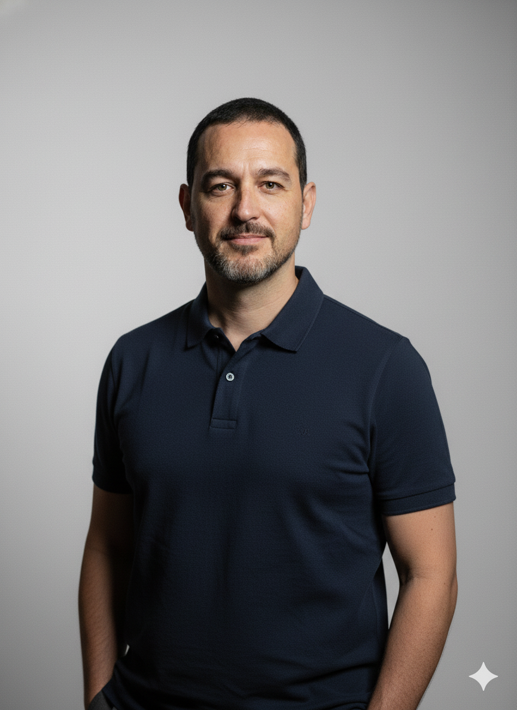
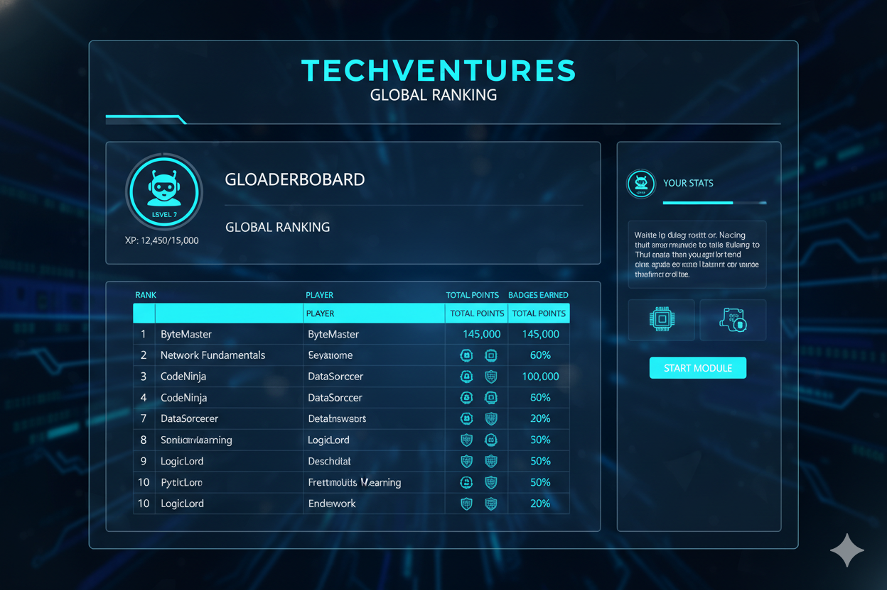
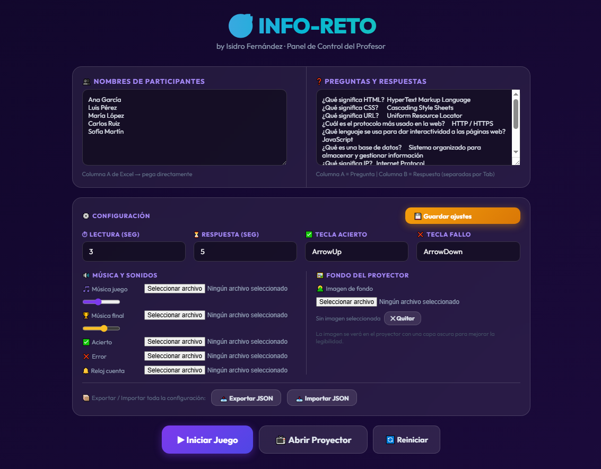
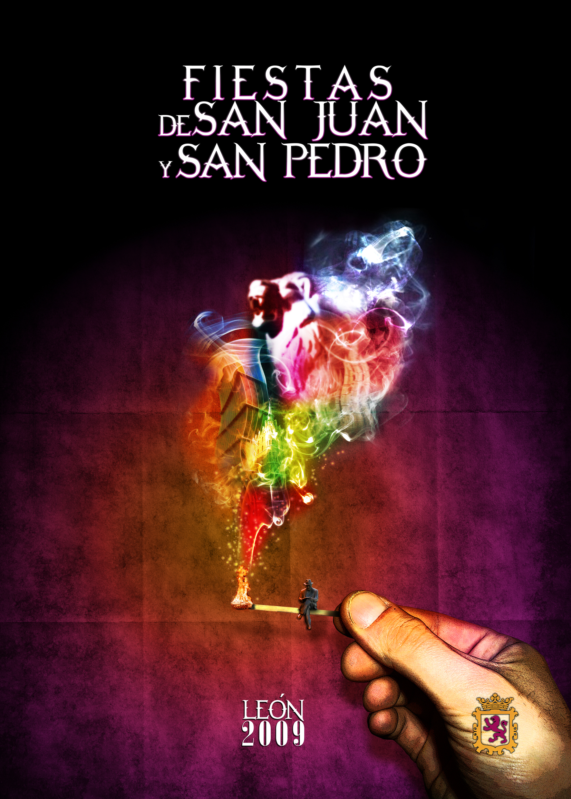
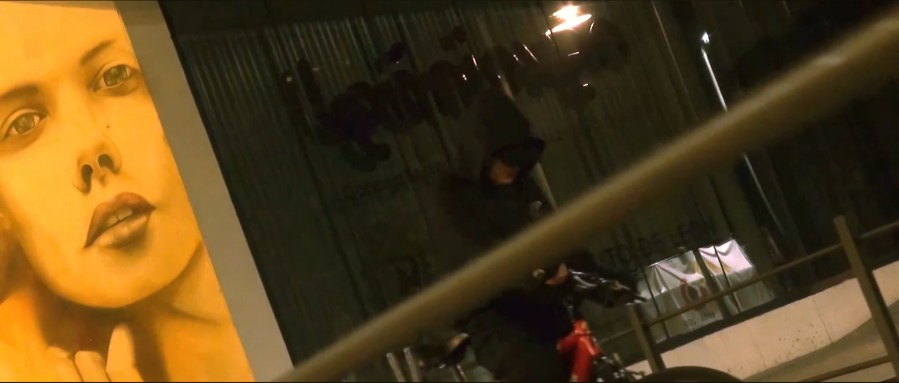
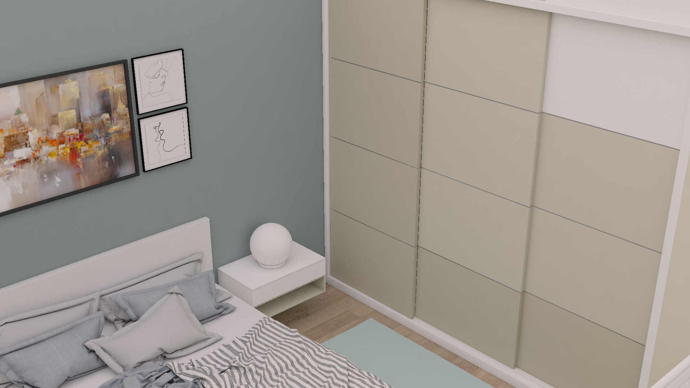
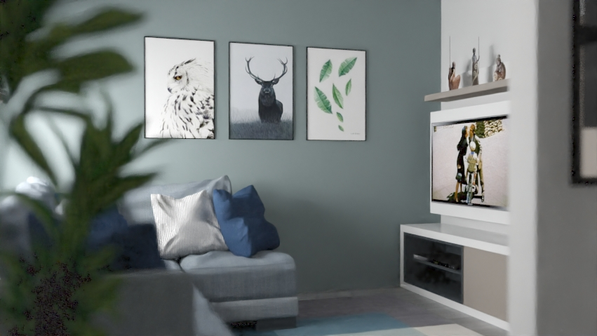
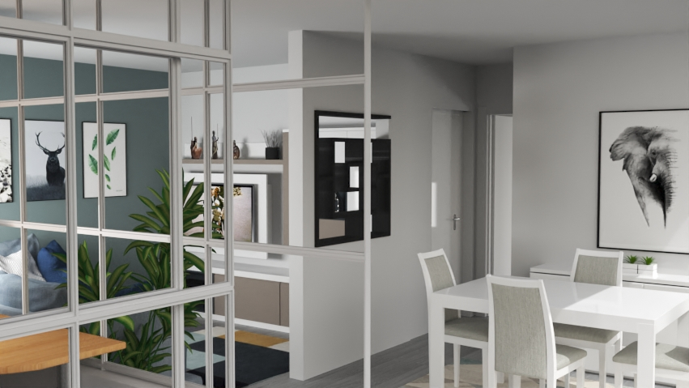
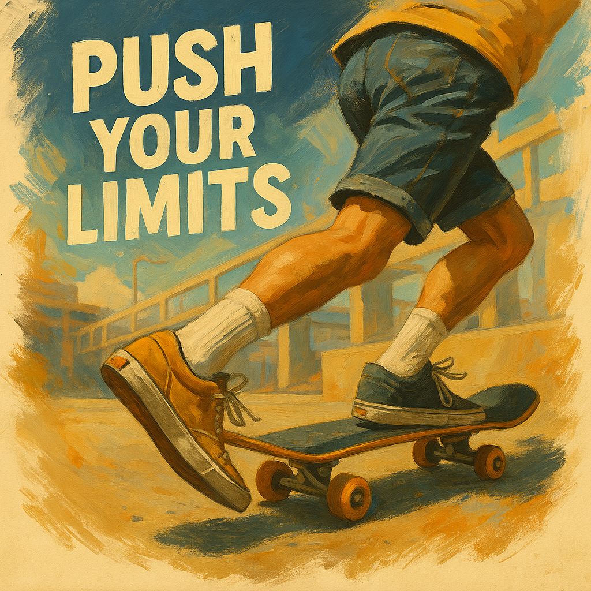

Gestión Integral del Curso
Sistema completo de seguimiento, asistencia y evaluación automatizada para el aula.
Ver recursos
Formación para el empleo en competencias digitales. 270h impartidas, herramientas propias y metodología práctica. Incorporación inmediata.

Diseño gráfico, vídeo, audiovisual, web, 3D. He trabajado en proyectos reales para empresas e instituciones públicas. Tengo premios verificables. Lo que enseño, lo he hecho en entornos profesionales reales. Eso es mi ventaja.
Formación para el empleo, competencias digitales nivel básico e intermedio. 270h impartidas, ~60 alumnos. Habilitado para presencial y e-learning. Especialista en simplificar conceptos sin perder rigor técnico.
Las clases no son charlas: son sesiones de trabajo donde sales con algo que funciona y que usarás en tu día a día. Basada en 20 años de experiencia profesional real.
Cada sesión parte de un caso que te encontrarás en tu trabajo. Sin ejercicios de libro: situaciones que resuelves con herramientas reales. Cuando terminas, tienes algo funcional que puedes usar.
Usas ChatGPT, Word, Excel, Canva, Photoshop desde la sesión 1 (adaptado a tu nivel). No empezamos explicando "qué es": empezamos haciéndolo. El "cómo" y el "por qué" se aprenden mientras lo haces.
No enseño herramientas aisladas. Enseño procesos: escribir un informe en Word → mejorarlo con IA → compartirlo en Teams → presentarlo. Todo integrado, como en un trabajo real.
No todos aprendemos al mismo ritmo. Seguimiento personalizado, repetición sin presión, lenguaje claro sin tecnicismos. Feedback constante. La tecnología es la herramienta; tú eres lo importante.
Herramientas creadas desde cero para mejorar el aprendizaje en el aula. Gamificación real con resultados medibles.
Sistema completo de seguimiento, asistencia y evaluación automatizada para el aula.

Dinámicas de juego reales aplicadas a contenidos técnicos para aumentar el engagement.

Herramienta interactiva de repaso de conceptos clave mediante el popular formato de rosco.
20 años creando en tiempo real. 3 años transmitiendo ese conocimiento.
Impartición de formación en competencias digitales básicas, ofimática, herramientas digitales y IA aplicada al trabajo real. 270h acumuladas, ~60 alumnos. Modalidad presencial y e-learning. Habilitado para docencia en enseñanza no reglada.
20 años creando en sector creativo. Especialista en diseño gráfico (Photoshop, Illustrator), vídeo profesional (Premiere, After Effects), visualización 3D (Blender, 3D Max), desarrollo web (HTML, CSS, JavaScript). Trabajos para: Horno San Guillermo, Ayuntamiento de León, Constructora Ciasa. Cartel premiado (1º Premio Fiestas San Juan y San Pedro 2009).
Herramientas que domino y que enseño. Experiencia verificable en cada una.
Premios verificables que demuestran nivel profesional real.

Cartel Fiestas San Juan y San Pedro
"Rewind"

▶"T.O.C."
Estos trabajos demuestran el nivel técnico que poseo. Son proyectos reales, premios verificables y herramientas creadas desde cero. Mi experiencia profesional es lo que transmito a los alumnos.
20 años creando identidades visuales, cartelería y maquetación para empresas e instituciones públicas. Cartel premiado (1º Premio Fiestas San Juan y San Pedro 2009). Nivel profesional. Este es el conocimiento que transmito en formación de diseño gráfico.


Cortometrajes premiados: 2º Premio "Rewind" (Espacio Vías), 3º Premio "T.O.C." (Espacio Vías). Experiencia en Premiere Pro, After Effects, composición visual profesional. Videos corporativos, animación, motion graphics. Este es el nivel que enseño.
Renders profesionales en Blender y 3D Max. Proyectos reales en arquitectura, interiorismo y product design. Visualización de espacios, maquetas digitales, presentaciones de proyectos. Experiencia verificable en entornos profesionales.



Generación de imágenes usando herramientas de IA (Nano Banana2,Firefly, Midjourney, Leonardo AI). Dominio de prompt engineering avanzado. Creación de conceptos visuales profesionales. Demostraciones prácticas del nivel que enseño en formación de IA aplicada.

Especializado en formación para el empleo, nivel básico e intermedio. Profesional con 20 años de experiencia verificable. Presencial, online tutorizado o mixta. Programas personalizados según necesidades del cliente.